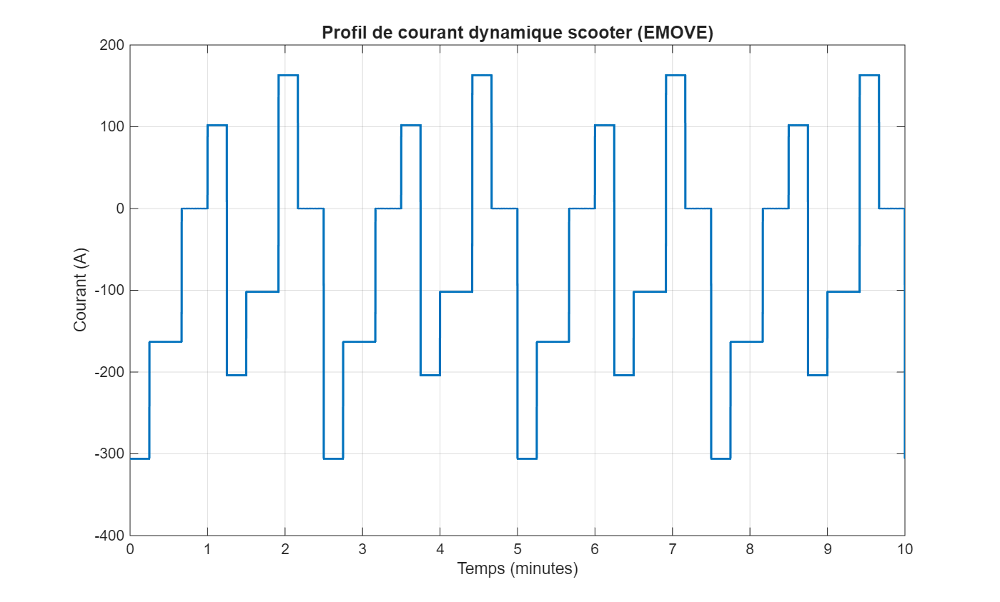
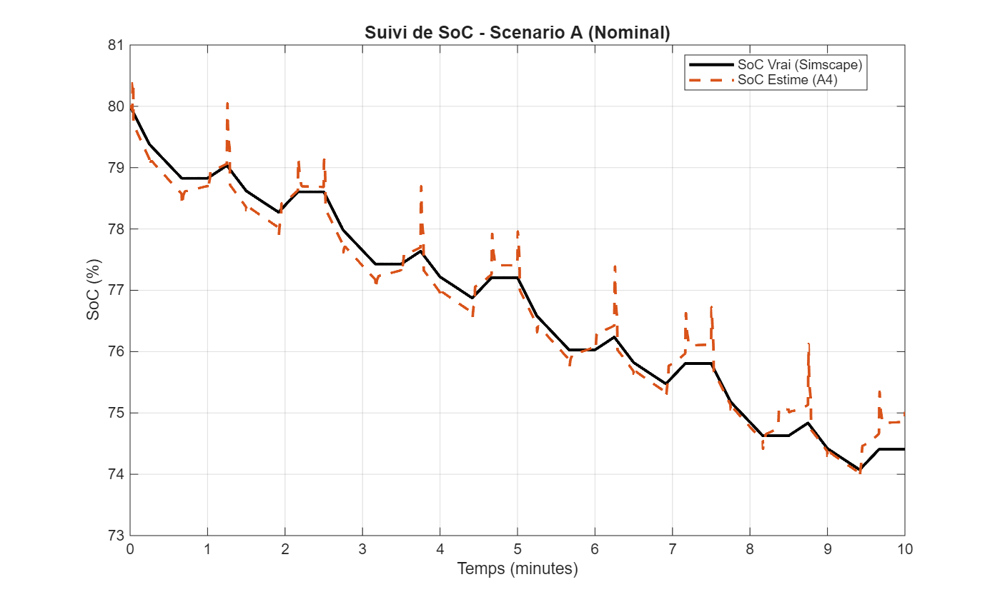
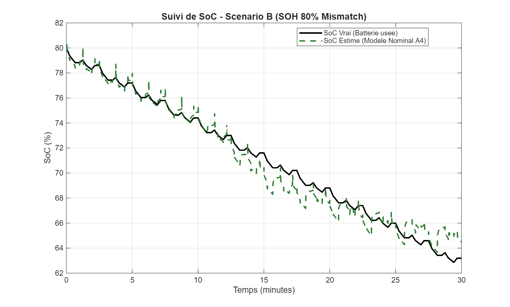
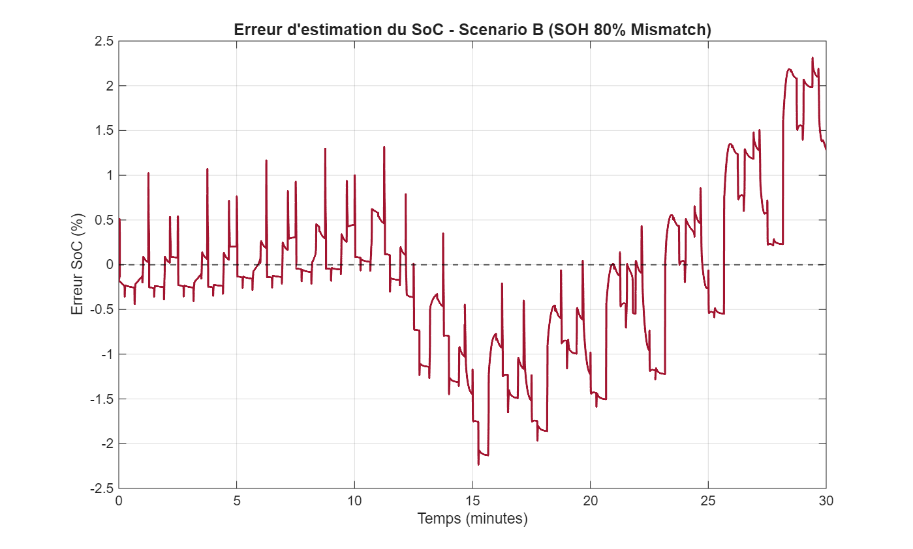
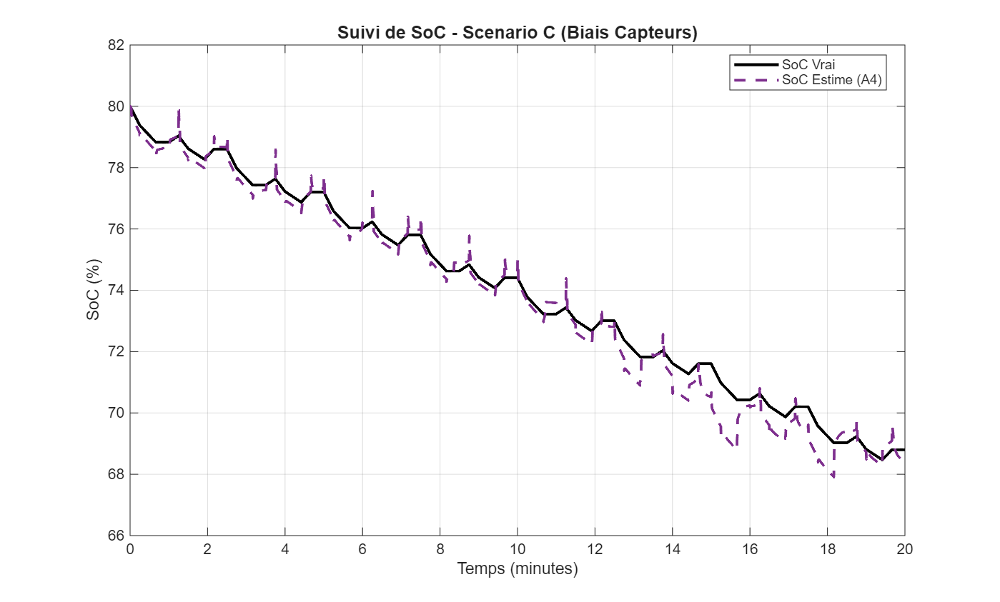
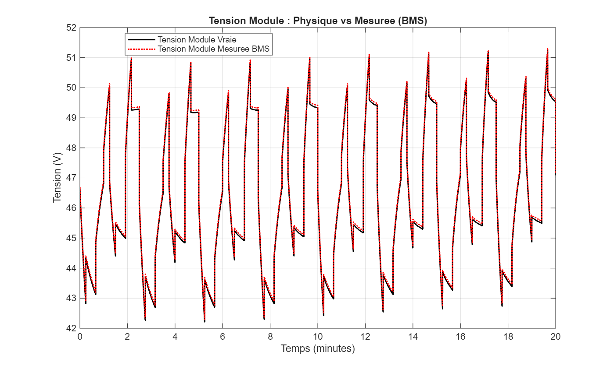
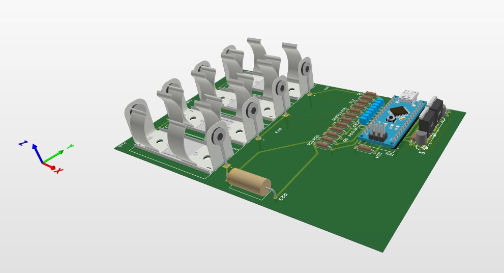

Système de gestion de batterie (BMS) intelligent : estimation avancée de l’état de charge (SoC) et équilibrage actif
Emove Véhicules · Intelligence batterie, matériel embarqué et redistribution active d'énergie
Étude de cas ciblée sur l'ingénierie algorithmique et matérielle d'un système de gestion de batterie intelligent. Les travaux portent sur l'estimation robuste de l’état de charge (SoC) et de l’état de santé (SoH) sous profils de charge dynamiques, ainsi que sur une architecture d'équilibrage actif reposant sur un transfert d'énergie bidirectionnel par convertisseur Flyback synchrone.
Problématique
Les observations sur le terrain de la flotte de scooters électriques ont révélé des anomalies de performance critiques, notamment :
Coupures d'Alimentation Prématurées
Le véhicule subissait des pertes d'alimentation brutales, bien que l'indicateur d'état de charge (SOC) au tableau de bord affichât encore environ 20 % de capacité restante.
Instabilité Sévère du SOC
Le SOC estimé présentait des chutes rapides et erratiques lors de profils de décharge à fort courant (ex. fortes accélérations), révélant une instabilité majeure de l'algorithme de jauge.
Causes Probables
Une analyse des causes profondes a permis d'identifier trois facteurs principaux à l'origine de ces défaillances :

1. Hétérogénéité des Cellules
Des variations intrinsèques de capacité et de résistance interne entre les cellules entraînent la limitation prématurée du pack batterie entier par l'élément en série le plus faible.
2. Capacité d'Équilibrage Insuffisante
Les mécanismes d'équilibrage passif traditionnels s'avèrent inadaptés pour compenser les dérives de capacité importantes au fil du temps.
3. Estimation Non Robuste du SOC
L'algorithme d'estimation de base échoue à suivre de manière dynamique et précise le véritable état de charge sous des conditions de charge transitoires.
Périmètre du Projet
Les travaux d'ingénierie qui en découlent se concentrent spécifiquement sur l'atténuation de la Cause n°3 (Estimation Non Robuste du SOC), tout en intégrant simultanément une architecture d'équilibrage actif à hautes performances pour pallier l'hétérogénéité des cellules.
Flux d'Ingénierie
Modélisation et développement des algorithmes
Le cycle d'ingénierie a débuté par le développement d'un modèle de batterie virtuel haute fidélité (Jumeau Numérique). Cela a facilité la conception rigoureuse, le réglage et les tests en boucle fermée des algorithmes d'estimation du SOC dans l'environnement MATLAB/Simulink, en faisant abstraction des contraintes matérielles lors des premières phases de développement.

Validation par simulation en boucle modèle (MiL)
Pour vérifier la robustesse de l’algorithme sous des profils de charge très variables, nous avons exécuté 12 scénarios de test en simulation modèle dans la boucle (MiL). Trois cas critiques sont présentés ci-dessous :
Scénario A : Profil Dynamique Nominal
Ce scénario évalue la réponse de l'estimateur sous un profil de courant nominal mais hautement dynamique. Les résultats confirment une stabilité d'estimation exceptionnelle sous de fortes charges dynamiques, atteignant une erreur quadratique moyenne (RMSE) de seulement 0,23 % et une erreur d'estimation finale de 0,61 %.


Scénario B : Vieillissement de la Batterie (80 % SOH)
Ce scénario évalue la robustesse algorithmique face à la dégradation de la batterie, en simulant spécifiquement un état de santé (SOH) de 80 %. Le SOC estimé suit précisément le SOC réel malgré la réduction de capacité disponible. Démontrant une RMSE de 0,89 % et une erreur finale de 1,33 %, ce scénario valide la capacité de l'architecture à maintenir une estimation hautement fiable en présence d'une perte de capacité modérée.


Scénario C : Biais des Capteurs et Bruit de Mesure
Pour évaluer la sensibilité aux imprécisions de mesure, des biais réalistes ont été introduits dans les lectures de tension et de courant. Malgré ces perturbations, la fusion UKF-LSTM, régie par la logique de supervision, a réussi à atténuer l'impact de l'incertitude des capteurs. Le système a maintenu un suivi étroit avec une RMSE de 0,49 % et une erreur finale de seulement 0,25 %.


Prototypage Matériel (HiL)
Après des résultats de simulation concluants, la chaîne algorithmique a été intégrée à un prototype simplifié afin de valider expérimentalement le fonctionnement en boucle matérielle (HiL). La configuration comprenait un circuit d’acquisition analogique sur mesure, conçu pour mesurer avec précision la tension des cellules au moyen de ponts diviseurs, le courant du pack au moyen d’un shunt de 0,22 Ω et les températures au moyen de thermistances à coefficient de température négatif (CTN).
Cette phase a également permis de valider l’architecture de protection de puissance : deux transistors à effet de champ métal-oxyde-semi-conducteur (MOSFET) à canal P (IRF5210) sont commandés par un étage d’adaptation de niveau à transistor bipolaire NPN (négatif-positif-négatif, 2N3904), qui assure l’interface avec la logique du microcontrôleur.

Architecture Matérielle Industrielle
Le prototype validé a ensuite fait l’objet du routage complet d’une carte de circuit imprimé (PCB, Printed Circuit Board) industrielle à six couches sous Altium Designer. La carte s’articule autour d’un microcontrôleur haute performance STM32H743VIT6. Son unité de calcul en virgule flottante (FPU, Floating-Point Unit), son contrôleur d’accès direct à la mémoire (DMA, Direct Memory Access) et ses deux horloges (32,768 kHz et 25 MHz) permettent l’exécution en temps réel des modèles ECM et des algorithmes UKF et LSTM.
La carte intègre un circuit de surveillance des cellules BQ76952PFBR, qui assure la protection matérielle primaire, ainsi qu’un contrôleur d’équilibrage actif LTC3300-1, qui permet le transfert bidirectionnel d’énergie. La conception respecte des exigences strictes de compatibilité électromagnétique (CEM) et d’intégrité du signal, avec notamment une isolation galvanique (TME 0505S) et une interface sur bus CAN (Controller Area Network) dédiée à l’intégration dans le véhicule.


Conclusion et perspectives
L'architecture du BMS intelligent proposée atténue avec succès les coupures de courant prématurées et maximise l'extraction de l'énergie utilisable. Les futures directives d'ingénierie impliquent une validation complète en temps réel sur des packs de batteries au lithium-fer-phosphate (LFP) à l'échelle réelle, sous des conditions d'exploitation réelles du véhicule, afin de certifier le système pour une production de masse.
Intéressé(e) par ce projet ?
Connectez-vous sur LinkedIn ou contactez-moi pour discuter de modélisation de batteries, de systèmes embarqués et d'ingénierie de la mobilité électrique.